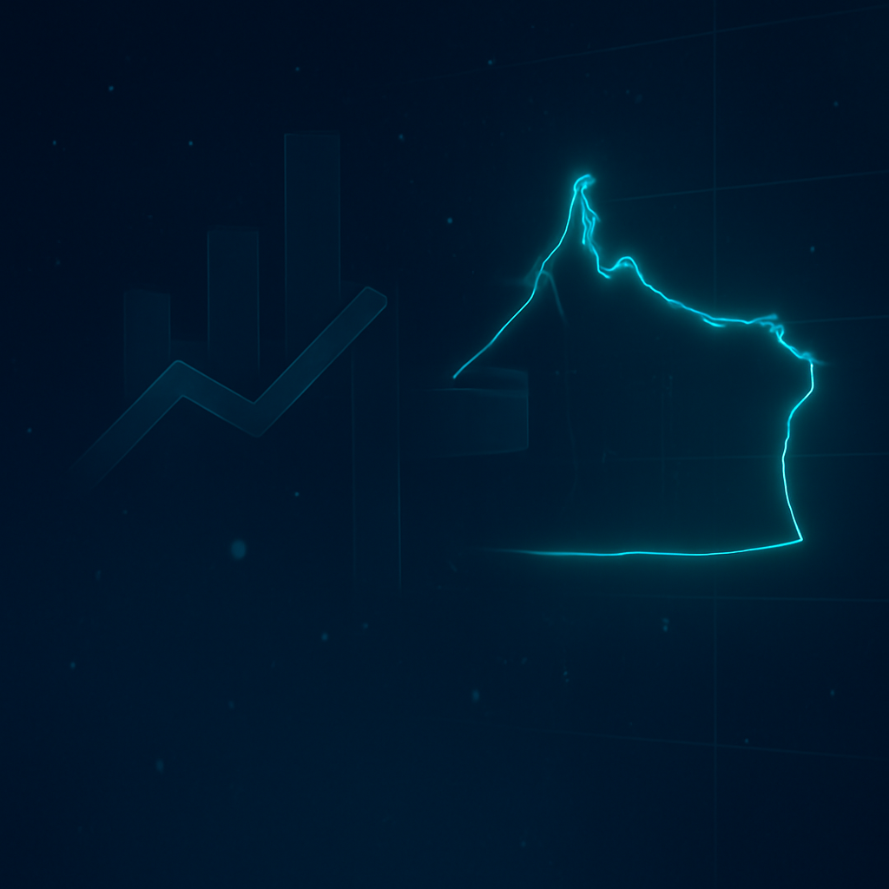

Мониторинг ИТ-отрасли
Калининградской области
Интерактивная аналитическая платформа
Автоматический импорт данных из Реестра Минцифры и ЕГРЮЛ,
интерактивные графики и офис-карточки компаний.

Возможности платформы
Сбор данных
Загрузка и обновление данных из реестров, дедупликация по ИНН/ОГРН.
Аналитика
Графики по метрикам, фильтры, временные ряды и экспорт отчётов.
Поиск и карточки
Поиск компаний, детальная карточка организации, экспорт CSV.